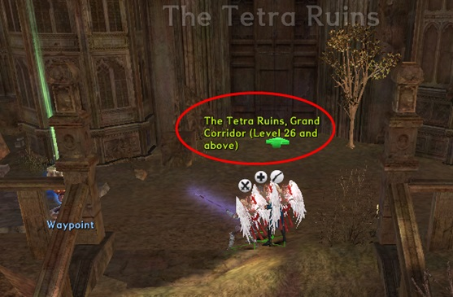

| Start NPC | Ramiro |
|---|---|
| Zone | Reboldoeux, Gate of the Queen |
| Objective | Recruit Ramiro |
| Basic rewards | 1 pc Ramiro Card |
| Item rewards | 3 pcs EXP Cards Grade 4, 2 pcs Shiny Crystals |
Quest walkthrough
Girl in Danger

Ramiro is located in the south of Reboldoeux, gate of the queen.
Once you accept the request, you would be moved to the mission area.
Monsters appear from the 3 places, marked as red arrows, and rush to the place of the blue square on the map.
You need to survive for limited time to clear the mission.
Tip. Once you talk to a girl friend of Ramiro quickly, she would provide you a useful buff.
Talk to Ramiro after clearing the mission.
Rewards: 3 EXP Cards Grade 4, 1 Shiny Crystal
Her Photo
Once you talk to Ramiro after clearing the ‘Girl in Danger’ quest, He would show you a Photo of Bernelli saying ‘What do you think of this girl here? ‘
You can choose either ‘So so.’ Or ‘Pretty’ to start a mission.
I think we’ve just saved the girl friend of Ramiro…. Was it just imagination?
You can clear the mission once you defeat Ramiro in the mission area. Talk with Ramiro again after clearing the mission.
Defeated Ramiro provides you his card saying that he wants to be your friend.
Rewards: 1 pc Ramiro Card, 1 pc Shiny Crystal
| Start NPC | Emilia |
|---|---|
| Zone | The Port of Coimbra |
| Objective | none |
| Basic rewards | none |
| Item rewards | Shiny Crystal X2, EXP Card Grade 56 X3, Shiny Crystal X2, EXP Card Grade 56 X3, Emilia Guliano Character Card X1 |
Quest walkthrough
Let’s go visit Emilia of the Port of Coimbra.
Accept a quest from Emilia by talking with her.
Emilia says that she is looking for a dairy that written by her missing father, and asks you to go to the Tetra Ruins, Grand Corridor.
To get to the Tetra Ruins, Grand Corridor, you should transfer to the Tetra Ruins first by using Waypoints of each town, then move to the direction of Tetra Ruins, Grand Corridor.
Once you arrive at the Tetra Ruins, Grand Corridor, move to the quest area. Open a Strange Cask, then you can obtain the Diary of Dr. Lorenzo Guliano.
Move back to Emilia in the Port of Coimbra bringing the Diary of Dr. Lorenzo Guliano.

Once you hand over the Diary of Dr. Lorenzo Guliano to Emilia, she rewards you Shiny Crystal X2 and EXP Card Grade 56 X3.
When you speak with Emilia again, she requests you to deliver the Diary of Dr. Lorenzo Guliano to a friend of her father’s in Cite de Reboldoeux.
Bring the Diary of Dr. Lorenzo Guliano and hand it over to Scholar in Cite de Reboldoeux.
Return to Emilia in the Port of Coimbra.
Once you talk to Emilia, Shiny Crystal X2, EXP Card Grade 56 X3, and Emilia Guliano Character Card X1 are provided as final rewards.

Emilia Character can be created by using the acquired Emilia Guliano Character Card.
| Start NPC | Auch Pioneering Officer |
|---|---|
| Zone | City of Auch |
| Objective | Selva Norte Recruitment |
| Basic rewards | Selva Character Card |
| Item rewards | 3 Veteran B EXP card, 3 Epic Grade Glazium, 1 Selva card, 1 [Cauchemar] Book, 1 [Rapida Espada] Book, Recipe ? 1 Glove of Selva |
Quest walkthrough
Caution: Selva recruitment quest will start when you talk to Auch pioneering officer after clearing the Sedecram scenario quest.
Once you cleared Sedecram scenario quest, you can start Selva recruitment quest by talking to Auch Pioneering officer.
Testing of Ability Verification
The pioneering officer will ask you to bring 2 seals of hero as a requisite to complete this quest.
You can acquire the seal of hero through the battle colosseum, market, or by trading.
Acquire 2 seals of hero and go back to the pioneering officer.

Rewards: 3 Veteran B EXP card, 3 Epic Grade Glazium.
Deporting Viscount Montoro to Vespanola 1

Once qualified for the ability verification test from pioneering officer, you will receive the repatriation of viscount Montoro quest. For additional information, visit admiral Nunez of Coimbra.
Deporting Viscount Montoro to Vespanola 2

Nunez will tell you that Dr. Fran Mothtein might know the Montoro’s whereabouts.
To find Dr. Fran Mothtein, you have to go to Joaquin, Corridor of Assize Mission. You can enter the Joaquin, Corridor of Assize Mission through NPC Coimbra Mercenaries. Defeat Chrysalis and Dr. Fran Mothtein at Joaquin, Corridor of Assize Mission and go back to Nunez.

As it seems that it’s going to be hard to get information from Dr. Fran Mothtein, Nunez will ask you to visit Ludeza Vishihah in Katovic Snowfield.
Trail of Montoro 1


Ludeza Vishihah orders to combine Nucleus of Ghost with Heart of Ryrin to lure Montoro. Move to the Frozen Plain to hunt for Heart of Ryrin.
Trail of Montoro 2
Giant Avalanche Apparition will appear if the Nucleus of Ghost is dragged to the Heart of Ryrin.
Montoro will appear when Giant Avalanche Apparition is defeated. You will acquire a Memo of Montoro after defeating Montoro. Bring the Memo of Montoro to Ludeza Vishihah.
Ludeza Vishihah hands over the scroll to the pioneering family who defeated Montoro. Go to Invierno for the interpretation.
Trail of Montoro 3
Once you hand over the scroll to Invierno, Selva will appear and the mission will begin. Defeat Selva and talk to Invierno again.
Invierno will then notice the code in the book. Go to the laboratory of Torsche mansion and talk to Torsche.
Trail of Montoro 4
After reading the scroll, Torsche will tell you that he doesn't know what it means. He'll tell you to investigate on your own.
Find a bookshelf that will let you in the secret room. Once you've entered the secret room, Cortes will ask you to remove the petrifaction spell.
Trail of Montoro 5
Go to Invierno to dispel the petrifaction of Cortes.
Invierno requests to bring 1 Snowfield soup and 10 Stone of Philosopher to dispel the petrifaction of Cortes.
Snowfield soup can be made through the Trace of Cruelty quest. If you talk to Invierno while carrying 1 Snowfield soup and 10 Stones of Philosopher, Invierno will make the Anti-Petrifaction potion for you. Once you've obtained the Anti-Petrifaction potion, go back to Cortes and dispel his petrifaction.
Once the petrification has been removed, Cortes will attack you together with Sharon. Once defeated, Cortes will leave a message saying that Montoro is in the greatest land that is nearest to the God. After that, Cortes will then disappear. Talk to Dr. Torsche again.
Once you talk to Dr. Torsche, Selva will suddenly appear and request if she can accompany the pioneering family in finding the place where Montoro is located.
Rewards: 1 Selva card, 1 [Cauchemar] Book, 1 [Rapida Espada] Book, Recipe - 1 Glove of Selva.